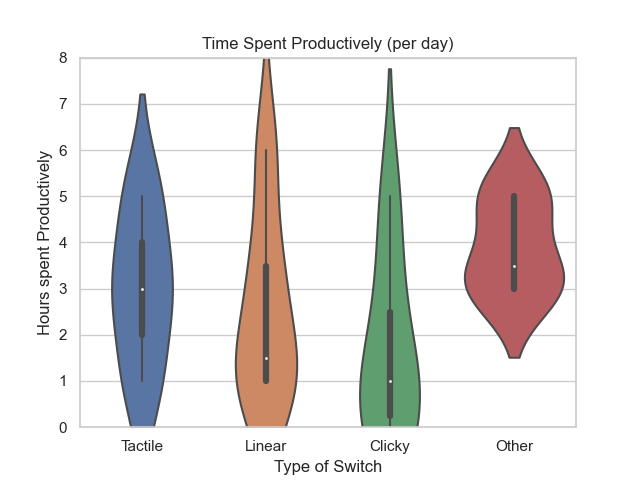
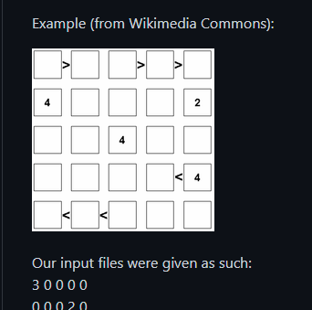
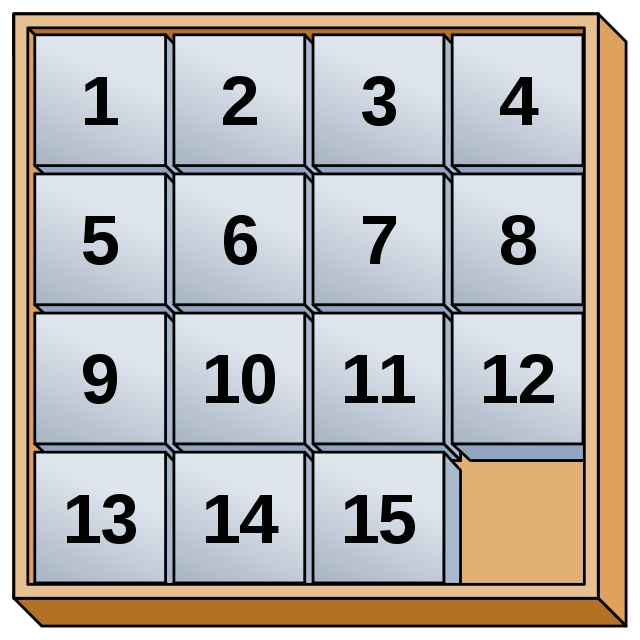
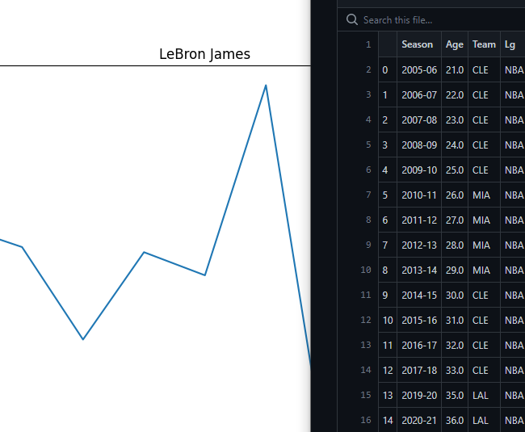

Keyboard Data Analysis
Pandas, Matplotlib, Seaborn

Futoshiki Solver
Backtracking & Forward Checking Algorithms

15-Puzzle Solver
A* Search Algorithm w/ Manhattan Distance Heuristic
SAP Script
Script for Artemis Networks
My Webpage (link to source)
HTML, CSS, and JavaScript

Basketball Data Analysis
Pandas, Numpy, Matplotlib
For more, please check out at my
Github!